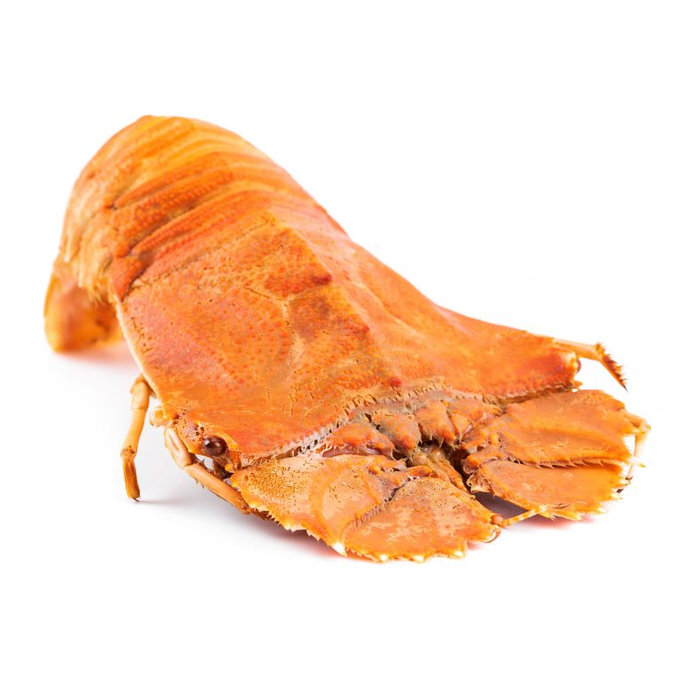
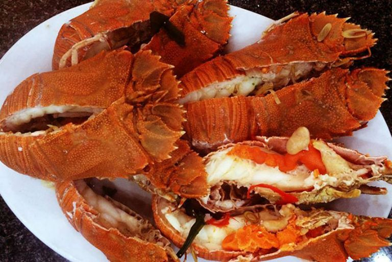
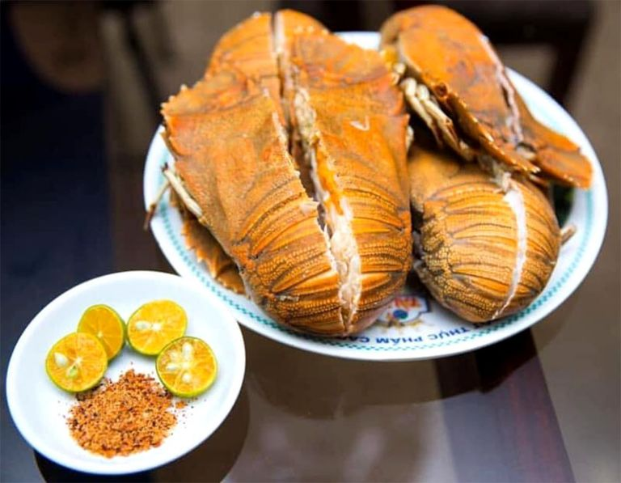
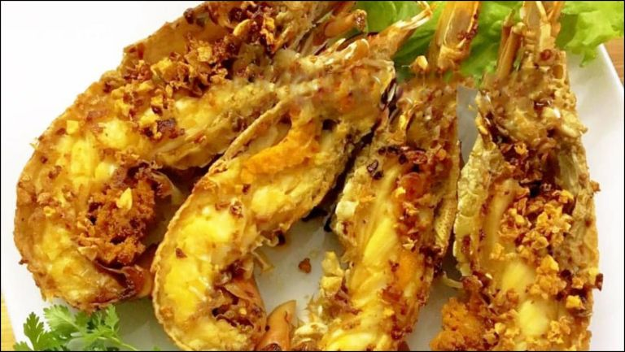
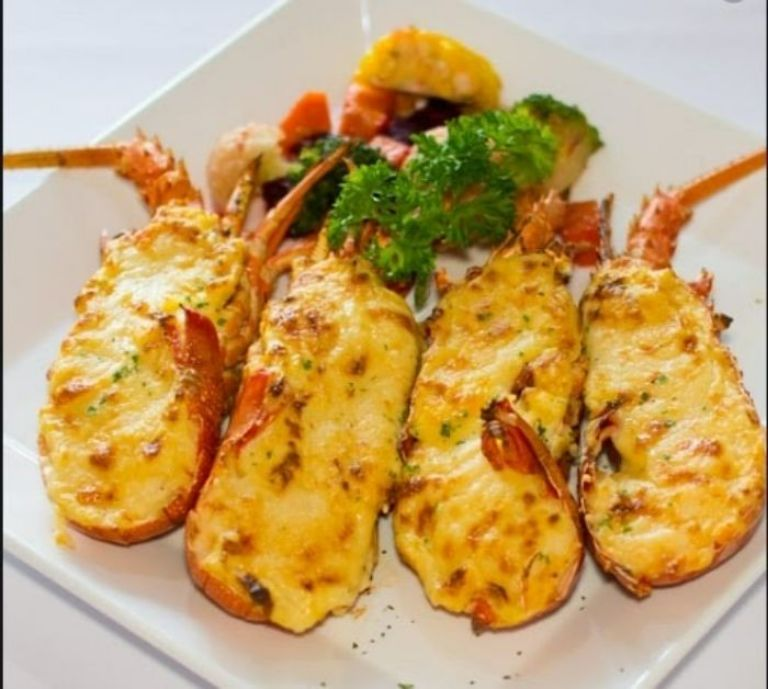
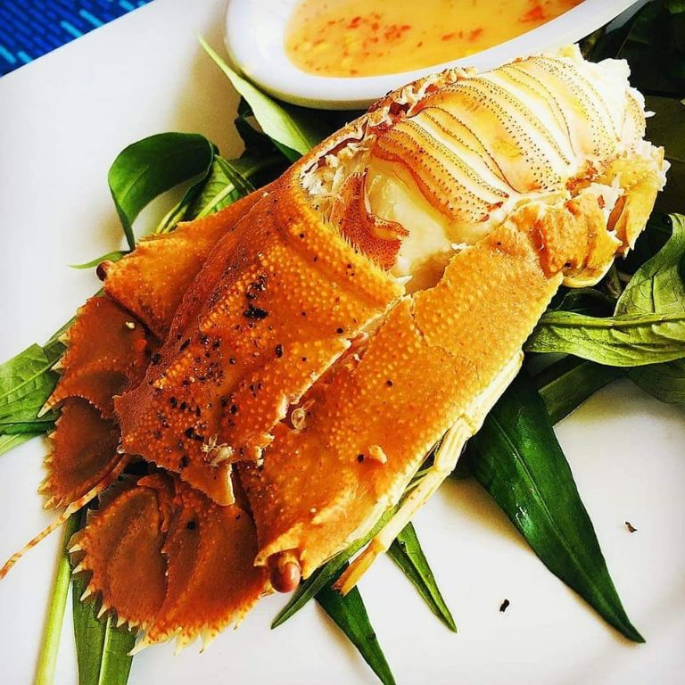

HÌNH ẢNH TÔM MŨ NI
Tôm mũ ni là loài tôm biển rất dễ nhận ra chúng với xúc giác to trước đầu như một cái đĩa lớn. Loài tôm này sống tại các vùng biển và đại dương ấm. Tại Việt Nam chúng quen thuộc hơn với cái tên tôm vỗ.
Loại tôm này thường phân bố ở các vùng nước rạn. Đặc biệt là những nơi có dạng san hô phát triển. Tôm mũ ni thường có mặt tại nhiều vùng biển miền Trung nước ta như Nha Trang, Phan Thiết. Vì tôm có đặc điểm thịt ngọt, dai nhiều người ưa thích nên mang lại giá trị thương mại rất lớn. Ngoài ra, môi trường sống ở loại hải sản này rất sạch, không bị ô nhiễm bởi các hóa chất khác. Thức ăn của chúng là các loài ốc hai mảnh, nghêu, cá nhỏ, tôm, cua. Loại tôm này có kích thước lớn hơn so với những loại tôm thông thường. Một con tôm trưởng thành có thể nặng lên tới 2kg.
Tôm mũ ni giá bao nhiêu 1kg?
1.Tôm mũ ni trắng
- Tôm size lớn 4-6 con/kg: 850.000 đ/kg
- Tôm size nhỏ 7-10 con/kg: 750.000 đ/kg
2.Tôm mũ ni đen
- Tôm size lớn 4-5 con/kg: 970.000đ/kg
- Tôm size nhỏ 6-8 con/kg: 850.000đ/kg
3.Tôm mũ ni đỏ
- Tôm size lớn 2-3 con/kg: 1.700.000đ/kg
- Tôm size vừa 4-5 con/kg: 1.650.000đ/kg
- Tôm size nhỏ 6-8 con/kg: 1.250.000đ/kg
ĐỊA ĐIỂM MUA HÀNG CHẤT LƯỢNG
Ngày nay tôm không còn quá xa lạ, chúng đã và đang mang lại nhiều lợi ích về kinh tế cho người dân cũng như nhiều nhà hàng hải sản. Dưới đây là gợi ý nơi mua tôm mũ ni hàng uy tín tại các thành phố lớn.
1.Tôm mũ ni Hà Nội:
- Hải sản Hà nội: số 32 ngách 10 ngõ, 462 đường bưởi, Vĩnh Phú, Ba Đình, Hà Nội.
- Hải sản Nguyên Anh: 38 Nhân Hòa, Nhân Chính, Thanh Xuân, Hà Nội.
- Hải sản tươi sống Liên Hiền: 732 Minh Khai, quận Hai Bà Trưng, Hà Nội.
- Hải sản Xanh: ngõ 50 Mễ Trì Thượng, Mễ Trì, Nam Từ Liêm, Hà Nội.
- Hải sản ông Ba: số 32 ngách 10 ngõ, 462 đường bưởi, Vĩnh Phú, Ba Đình, Hà Nội.
2.Tại thành phố Hồ Chí Minh
- Đại hải sản: 16A Cô Giang, phường Cầu Ông Lãnh, quận 1, thành phố Hồ Chí Minh.
- Hải sản tươi sống Bình Thạnh: 19B Bình Lợi, phường 13, Bình Thạnh, thành phố Hồ Chí Minh.
- Hải sản sạch 24h Seamart: Lô D, chung cư Hà Đô, Nguyễn Văn Công, phường 3, Gò Vấp, thành phố Hồ Chí Minh.
- Hải sản tươi sống quận 12: Phan Văn Hớn, Tân Thới Nhất, quận 12, thành phố Hồ Chí Minh.
3.Tại Hải Phòng
- Hải sản Hải Phòng: 266 Trần Nguyên Hãn, Niệm Nghĩa, Lê Chân, Hải Phòng.
- Homefarm: số 177 Hai Bà Trưng, An Biên, Lê Chân, Hải Phòng.
- Hải sản tươi sống: 379 Nam Hải, Hải An, Hải Phòng.
CÁCH CHỌN TÔM MŨ NI NGON
Đầu tiên, khi mua loại tôm này bạn cần phải chú ý đến phần đầu. Dùng tay sờ vào đầu chúng, nếu thấy chắc chắn không dễ bị di chuyển thì con tôm đấy đạy chất lượng. Ngoài ra tôm tươi sẽ có phần màng bụng căng, trắng hồng. Đây là những đặc điểm cơ bản của những chú tôm tươi ngon bạn nên quan sát kỹ.
Đặc biệt quan trọng, khi ăn tôm chúng ta không nên mua những con đã mất đầu. Hoặc có mùi hôi, khai để tránh ảnh hưởng đến sức khỏe. Hơn hết một con tôm mũ ni tươi sẽ có màu sáng, không bị xỉn hay nhạt. Nên đến trực tiếp các địa điểm mua hàng để kiểm chứng độ chắc khỏe và chất lượng của thực phẩm.
Tôm mũ ni làm món gì ngon?
Đối với tất cả các cách chế biến từ tôm mũ ni, cách làm nào cũng dễ và không gây mất thời gian cho mọi người. Nếu bạn muốn biết thêm nhiều hơn các món ăn từ loại tôm này, thì hãy tham khảo các công thức làm món ngon từ chúng ngay bên dưới.
1.Tôm hấp nước dừa
Như chúng ta cũng biết, món hấp được xem là một món ăn quốc dân. Ai ai cũng biết làm và hiểu được chúng có ích như thế nào với sức khỏe. Thế nhưng để món hấp của bạn không bị nhàm chán. Hãy làm thử công thức tôm mũ ni hấp nước dừa này để có thêm món ngon cho gia đình.
Trước tiên để làm tôm hấp chúng ta cần chuẩn bị 300ml nước dừa. Song song đó là làm sạch thịt tôm vỗ, xếp lên xưởng hấp. Lưu ý nên hấp trong 20 phút và không mở nắp vung để tránh bị bay hơi. Bây giờ chỉ cần chờ đợi chúng chín là chúng ta đã hoàn thành xong món ăn siêu đơn giản này.
Bạn thấy không, độ ngọt thanh của nước dừa, tôm mũ ni đậm vị đã gây được sức hút với người thưởng thức. Đây là một ăn rất đáng thử và nên bổ sung chúng vào thực đơn trong tuần của bạn. Chắc chắn rằng, sức khỏe của bạn sẽ tốt lên mỗi ngày nhờ món ăn dinh dưỡng này.
2.Cách làm tôm mũ ni cháy tỏi
Tôm mũ ni chiên bơ tỏi là một trong những món ăn có lượt bán nhiều nhất tại các nhà hàng lớn nhỏ tại Việt Nam. Hương thơm của bơ tỏi làm say đắm lòng người. Còn chần chờ gì nữa mà hãy bắt tay vào làm ngay với cách làm siêu đơn giản.
Để món ăn này có chất lượng đảm bảo nhất, chúng ta cần phải chuẩn bị tôm tươi và được làm sạch sẽ. Tiếp sau đó cho dầu ăn, bơ và tỏi phi thơm thì cho tôm vào đảo đều tay. Cuối cùng nêm thêm một chút gia vị để thịt tôm ngấm đều là thành công với món ăn hấp dẫn này rồi.
Chỉ mất 30 phút thôi, mâm cơm gia đình bạn đã trở nên khác biệt. Chúng giờ đây đã lên một tầng cao mới vì độ ngon của món ăn khiến mọi người bay bổng. Thật không sai khi nói rằng, tôm mũ ni chiên bơ tỏi là món ăn gây thương nhớ và có một sức hút đặc biệt với tất cả mọi người.
3.Tôm nướng phomai
Một ngày bận rộn bạn ăn gì để không mất thời gian trong lúc chế biến. Chúng tôi cho rằng tôm mũ ni nướng phomai là một sự lựa chọn tuyệt vời cho bạn. Tuy cách làm đơn giản nhưng độ ngon thì không. Chúng tuyệt vời đến mức không còn từ nào có thể miêu tả được độ hấp dẫn của món ăn này.
Việc thực hiện món tôm nướng này chưa bao giờ dễ dàng đến thế. Với món ăn này chúng ta cần chuẩn bị phomai tùy thích, tôm mũ ni làm sạch và chia đôi phần thân cho dễ nướng. Rải đều phomai lên tôm cùng một chút muối tiêu tăng phần đậm đà. Cuối cùng nướng chúng với nhiệt độ 180 trong 20 phút.
Phần phomai hơi cháy xém, màu sắc của tôm tươi rói. Chỉ xem phần kết cấu ngoại hình món ăn thôi cũng đã khiến bao người phải xuýt xoa kinh ngạc. Vậy nên hãy thử thực hiện chúng ngay đi. Chắc chắn bạn sẽ không bao giờ phải cảm thấy hối hận khi bỏ công sức, thời gian để chế biến món ăn này.
NHỮNG LƯU Ý KHI DÙNG TÔM MŨ NI
Theo nhiều đánh giá cho thấy, tôm rất phù hợp với khẩu vị của nhiều người. Tuy nhiên khi ăn loại tôm này cần tránh một vài điều để không gặp nguy hiểm cho sức khỏe. Bạn cần lưu ý khi sử dụng chúng để mọi người chú ý hơn khi ăn loại thực phẩm này.
Ngoài những dưỡng chất tốt, thì trong tôm mũ ni có hàm lượng sodium cao nên những người bị gút, tiểu đường hay bị bệnh đường ruột không nên ăn hoặc hạn chế chúng một cách tối đa.
Không những thế, hãy nhớ rằng tuyệt đối không sử dụng loại tôm này khi bị ươn hoặc bảo quản đông lạnh lâu này. Bởi những chất đạm sẵn có trong tôm sẽ chuyển hóa thành chất độc gây nguy hiểm cho cơ thể.
Đặc biệt nhất, chúng ta không nên ăn hoa quả, uống trà hay các chất có cồn sau khi mới ăn thực phẩm này. Lý do là vì nguồn canxi trong loại tôm này khi kết hợp với vitamin C, các chất hóa học khác sẽ gây nên tình trạng buồn nôn, chóng mặt hoặc có thể bị ngộ độc thực phẩm.
Nhìn chung, loại tôm nào cũng tốt và có những ưu điểm. Tuy nhiên tôm mũ ni có những điểm khác biệt và nổi trội hơn. Chính vì thế nó có được tình yêu của thực khách. Với những thông tin trên mà chúng tôi gửi đến bạn, mong rằng sẽ giúp bạn có nhiều kiến thức hơn về loại tôm trên. Từ đó hiểu hơn về những loại thực phẩm gia đình mình sử dụng.
Nguồn tham khảo
- Wikipedia. (2021).Tôm mũ ni. [online] vi.wikipedia.org. Có tại: https://vi.wikipedia.org/wiki/T%C3%B4m_m%C5%A9_ni [Truy cập ngày 03/02/2022]
- Bách Hóa Xanh. (2022).Tôm mũ ni là tôm gì? Giá bao nhiêu, mua ở đâu, cách chế biến tôm mũ ni. [online] bachhoaxanh.com. Có tại: https://www.bachhoaxanh.com/kinh-nghiem-hay/tom-mu-ni-la-tom-gi-gia-bao-nhieu-mua-o-dau-cach-che-bien-tom-mu-ni-ngon-1381364 [Truy cập ngày 11/11/2022]
- Dịch vụ Xứ Nẫu. (2021).Giá tôm mũ ni đỏ – đen – trắng bao nhiêu 1kg? [online] dichvuxunau.vn. Có tại: https://dichvuxunau.vn/tom-mu-ni-tom-vo/ [Truy cập ngày 03/02/2022]
Trở thành người đầu tiên bình luận cho bài viết này!